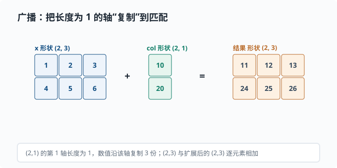

NumPy：数组与向量化
目标：把"逐元素循环"换成"对整个数组的一次运算"。读完这一页，你能创建数组、做矢量化运算、广播、切片与视图，并把矩阵乘法表达成一行代码——这是你后续所有机器学习练习的计算引擎。
为什么先学 NumPy
Python 原生列表做数值计算又慢又笨。慢是因为解释器逐条执行；笨是因为没有矩阵语义。NumPy 的核心是一个 ndarray（多维数组），它把数据存在连续的底层内存里，配合 C 语言实现的高效循环，让"对整个数组一起算"变得又快又清晰。
一个关键心态：
用 NumPy 时，"一次想一批"，而不是"一个一个想"。向量化就是让代码看起来像数学公式，而不是像嵌套的 for 循环。
创建数组
import numpy as np
a = np.array([1, 2, 3]) # 一维数组
m = np.array([[1, 2], [3, 4]]) # 二维数组（矩阵）
zeros = np.zeros((2, 3)) # 2×3 全 0
ones = np.ones(4) # 长度 4 全 1
eye = np.eye(3) # 3×3 单位阵
arange = np.arange(0, 10, 2) # [0, 2, 4, 6, 8]
linspace = np.linspace(0, 1, 5) # 0 到 1 均匀等分 5 个点
shape 和 dtype 是两个最该先认识的属性：
print(m.shape) # (2, 2) 每个轴的尺寸
print(m.dtype) # int64 每个元素的类型
shape 就是数据形状的"地图"。三维数组 (batch, seq, dim) 的三个轴一一对应"批、序列长度、维度"。读代码时，第一步永远是搞清楚轴的顺序。
形状与维度
数组的 ndim 表示轴数，shape 给出每轴长度：
x = np.zeros((8, 10, 512))
x.ndim # 3
x.shape # (8, 10, 512)
x.size # 8*10*512 = 40960 元素总数
标量形状是 ()，向量是 (n,)，矩阵是 (m, n)。注意 (n,) 和 (1, n) / (n, 1) 是不同的形状——这是新手极易踩的坑。(n,) 是一维，而 (1, n) 是二维，广播行为完全不同。
向量化运算
数组之间的 + - * / 是逐元素操作：
a = np.array([1, 2, 3])
b = np.array([10, 20, 30])
print(a + b) # [11 22 33]
print(a * b) # [10 40 90] 逐元素乘，不是矩阵乘！
标量与数组混合时，标量会被"广播"到每个元素：
print(a * 2) # [2 4 6]
点积与矩阵乘法
逐元素乘 * 和矩阵乘法是两回事。矩阵乘法用 @ 或 np.dot：
m = np.array([[1, 2], [3, 4]])
v = np.array([1, 1])
print(m @ v) # [3 7] 矩阵×向量
print(m @ m) # [[7 10] [15 22]] 矩阵×矩阵
在一行线性回归 y = Xw + b 里，矩阵乘正好表达"一次变换"：
X = np.array([[1, 2], [3, 4], [5, 6]]) # 3 个样本，2 个特征
w = np.array([0.5, -1.0]) # 2 个权重
b = 0.1
y = X @ w + b # 3 个预测值
print(y) # [-1.4 -2.4 -3.4]（如 0.5·1+(-1.0)·2+0.1 = -1.4）
广播 Broadcasting
先想一个很常见却又有点麻烦的情形：一个 $3\times4$ 的表格，你想给每一行都加上同一个偏置向量（长度 4）。最笨的办法是写嵌套循环，一个格子一个格子加；稍微好一点是先手动把它重复成 $3\times4$ 再相加。可这两种都不够优雅——前者慢，后者要手工造一堆重复数据、占内存。
NumPy 的答案是广播（broadcasting）：当两个数组形状不完全一致时，它会在运算时自动把某个长度为 1（或缺失）的轴"复制"成需要的大小，让两者形状对齐后再做逐元素运算，而底层不用真的多占内存：
x = np.array([[1, 2, 3],
[4, 5, 6]]) # (2, 3)
col = np.array([[10], [20]]) # (2, 1)
print(x + col)
# [[11 12 13]
# [24 25 26]]
把这次广播的"逐元素扩展"画出来：

图中的 col 形状是 (2, 1)，它的列维长度为 1——NumPy 在求和时会沿这个轴把每个值复制一份，变成和 x 一样的 (2, 3)，再逐元素相加。注意这只是"逻辑上的复制"：底层不会真的多占内存，而是复用同一个数值在多个位置参与运算。这也是广播能省内存的原因。
(2,3) 与 (2,1)：末尾的 3 与 1 不冲突，col 的列维 1 被扩展到 3，于是每行都加上了同一个行偏移（10 加到第一行，20 加到第二行）。这里正好和开头的例子是一对镜像：偏置向量形状 (n,) 沿行方向复制（每行加同一个向量），col 形状 (m,1) 沿列方向复制（每行加各自的标量）——取决于哪个轴的长度是 1。广播是"省内存"的隐形复制——它不真的产生大数组，只是复用。
广播规则的逐轴比较：
从右往左对齐两个 shape
两个维度要么相等，要么其中一个为 1，要么缺失（视作 1）
否则报错
用一张分支图记住"能不能广播"的判断顺序：
flowchart TD
A["两个 shape 从右往左逐轴比较"] --> B{"对应维度相等？"}
B -->|"是"| OK["继续比较下一位"]
B -->|"否，其中一个是 1？"| C{"是 1，可扩展"}
B -->|"否，两边都不是 1"| ERR["报错：维度不匹配"]
C --> OK
OK --> D["所有轴都匹配 → 广播成功"]
最常见的用法：给矩阵的每一行加一个偏置向量 X + bias（bias 形状 (n,) 广播成 (m, n)）。
索引、切片与视图
Python 列表的切片复制，但 NumPy 的切片返回的是视图——引用同一块底层数据：
a = np.arange(10)
b = a[2:5] # 视图，不是复制！
b[0] = 999
print(a[2]) # 999 ← a 也变了
要真复制用 .copy()：
c = a[2:5].copy()
自带坐标的多维索引：
m = np.arange(12).reshape(3, 4)
print(m[1, 2]) # 取第 1 行第 2 列
print(m[0]) # 第 0 行（一个一维数组）
print(m[:, 1]) # 所有行的第 1 列
print(m[1:, :2]) # 行 1 起、列 0~1 的子块
布尔掩码是筛选的利器：
x = np.array([1, 5, 3, 9])
print(x[x > 3]) # [5 9]
归约操作
"对某个轴求和/求均值"是最高频操作：
m = np.array([[1, 2, 3],
[4, 5, 6]])
m.sum() # 21 全部和
m.sum(axis=0) # [5 7 9] 按列（沿第 0 轴塌缩）
m.sum(axis=1) # [6 15] 按行（沿第 1 轴塌缩）
m.mean(axis=1) # [2. 5.] 每行均值
关键直觉：axis=k 表示"把第 k 个轴消掉"。axis=0 消掉第 0 轴（纵向，得到每列结果），axis=1 消掉第 1 轴（横向，得到每行结果）。这个直觉在神经网络里全是 softmax(axis=...)、mean(axis=...) 时极其重要。
深挖：NaN 会传染。真实数据里缺测值常被填成 NaN（not a number），而 NaN 有个恼人的性质——任何数和它运算结果都是 NaN。于是
arr.mean()只要混进一个 NaN，整批数据的均值就变成 NaN。两个应对：算之前np.isnan(arr).sum()数一数缺了多少；想直接忽略 NaN 就用np.nanmean/np.nansum/np.nanmax（前缀nan的归约家族）。做数据清洗时，"均值突然变 NaN"几乎总是这个原因。
高维数组与真实形状
Transformer 里的一个常见张量是 (batch, seq_len, d_model)。比如 (8, 10, 512)：8 个句子，每句 10 个词，每词一个 512 维向量。
token_embs = np.ones((8, 10, 512))
mean_seq = token_embs.mean(axis=1) # (8, 512) 每句平均成一个向量
理解每一层"把形状变成了什么"是读懂深度学习代码的硬技能。写代码前先算一遍 shape，写完后 print(shape) 验证。
性能意识
为什么向量化快？因为 x + 1 让 C 层一次性处理整个内存块，而 Python 的 for 循环每步都要经历解释器开销。经验法则：
优先向量化（numpy 整体运算）
不得已再用 numba（一个把 Python 函数即时编译成机器码的库）或改写编译
尽量避免 Python 层 for 循环遍历大数组
数组是连续内存，随机访问快；但拼接、频繁 reshape 也可能产生复制开销。初学阶段记住"尽量写成整体运算"就够。
动手：手写线性预测
把小节串起来，用广播 + 矩阵乘做一次拟合预测：
import numpy as np
X = np.array([
[1.0, 2.0],
[3.0, 4.0],
[5.0, 6.0],
]) # (3, 2) 三个样本
w = np.array([0.7, -0.3])
b = 0.5
y = X @ w + b # 广播 b
# 损失：均方误差
target = np.array([1.0, 0.0, -1.0])
mse = ((y - target) ** 2).mean()
print("预测:", y.round(3))
print("MSE:", mse.round(3))
思考题
x * w和x @ w在 NumPy 里含义有何不同？a[2:5]返回的切片是视图还是复制？想修改原数组应该怎么做？- 形状为
(4,)和(4, 1)的数组，与(3, 4)数组做加法时广播结果有什么不同？ - 数组形状
(8, 10, 512)，mean(axis=2)输出什么形状？
参考答案
x * w是逐元素相乘（长度需匹配或可广播），x @ w是矩阵乘法（要求内部维度匹配）。对矩阵(m,k)和(k,n)，@得到(m,n)；而*只是对应位置相乘，不改变形状。- 切片是视图，和原数组共享底层数据，修改切片会改到原数组。若想修改后不影响原数组，用
.copy()得到独立副本。 (3,4)与(4,)：从右往左，4=4 匹配，缺的第 0 轴视作 1，再扩展为 3，结果(3,4)，bias 对每一行加同一向量。(3,4)与(4,1)：右轴 4 与 1 可扩展为 4，左轴 3 与 1 可扩展为 3，结果(3,4)，但第二组每列是不同值、每行重复——即"列向量"沿行扩展。二者结果通常不同。axis=2消掉第 2 轴（512 那维），剩下(8, 10)。
下一步
- 想学会"选对结构控制复杂度" → 02-03 数据结构。
- 想用 Python 做完整研究流程 → 02-07 用 Python 做研究。
- 想在概率上真正算起来 → 01-03 期望与方差。